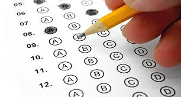

MateMarics

Asesorías MateMarics
¿Quienes somos?
Matemarics es una empresa especializada en la preparación de estudiantes para exámenes de admisión de preparatoria y universidad. Nuestro objetivo es proporcionar estrategias efectivas y conocimientos clave en cada área evaluada, asegurando que nuestros alumnos maximicen su rendimiento y alcancen sus metas educativas.
Nuestros servicios:
Ofrecemos asesorías personalizadas y cursos intensivos en las materias fundamentales que se evalúan en los exámenes de admisión, tales como:
Redacción Indirecta
Identificación y corrección de errores gramaticales
Uso adecuado de signos de puntuación
Ortografía y coherencia en la escritura
Revisión de estructuras sintácticas
Pensamiento Matemático
Razonamiento numérico y algebraico
Problemas de lógica y patrones matemáticos
Geometría básica y aplicada
Probabilidad y estadística
 >
>
Comprensión Lectora
Estrategias para identificar ideas principales y secundarias
Inferencias y deducción de significados
Interpretación de textos argumentativos y científicos
Análisis crítico de textos diversos

Metodología de Enseñanza:
Clases dinámicas con ejercicios prácticos
Simulacros de examen con retroalimentación detallada
Técnicas de gestión del tiempo y reducción de estrés
Acceso a materiales exclusivos y guías de estudio
